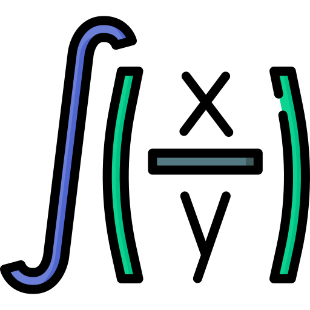

Identidades trigonométricas
Identidad trigonométrica: Es una indentidad que contiene funciones trigonométricas.
Ver formulas
Derivadas inmediatas
Derivada inmediata: Son las derivadas de las llamadas funciones elementales.
Ver formulas

Integrales inmediatas
Integrales inmediatas: Son las que salen directamente por la propia definición de integral.
Ver formulas